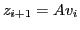
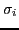
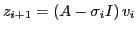
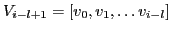
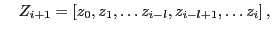
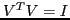
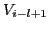
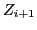
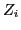

In many Krylov solvers running on current large scale compute clusters, global reductions for both inner products and norms is starting to become a bottleneck; a problem which will only get worse as we approach the era of exascale machines. Although flop rates keep increasing through additional parallelism, link latencies hit their physical limits. As compute nodes are often distributed over large datacenters, these latencies start to play an important role in algorithm design. Furthermore, load imbalance, system noise and processor variability (due to extreme reduction in scale and voltage) will make global communication an even more costly global synchronization step [1].
Recently there has been much interest in so called  -step Krylov
methods [2] that expand the Krylov base with
-step Krylov
methods [2] that expand the Krylov base with  new vectors at once
before performing an orthogonalization step. This reduces the number of
global communications by a factor
new vectors at once
before performing an orthogonalization step. This reduces the number of
global communications by a factor  .
.
In this work, we propose the use of non-blocking or asynchronous global collective operations to hide the latency of global communication in the GMRES algorithm. A standard GMRES iteration [3], based on classical (iterated) Gram-Schmidt orthogonalization, requires at least two global reductions, one for orthogonalization and one for normalization. First of all, we show that this can be reduced to just a single reduction. To avoid stability problems, the matrix vector product

is modified with a shift
as
. Proper choices of the shifts are discussed. Furthermore, we present a class of pipelined GMRES algorithms that allow overlapping of the inner product latency with other computations and communications. Depending on the total reduction latency, a larger pipelining depth

and
with

. Iteration
base using only results of reductions started
base is expanded by a vector created by the (shifted) matrix vector product. To prevent a blow-up of the condition number of the
base, a correction is applied to , which introduces some redundant calculations compared to the original GMRES algorithm.The numerical stability of the presented GMRES variation is examined using a collection of test matrices from applications. To assess the scalability and overall performance of the pipelined algorithms, we developed an analytical performance model, which allows us to study scaling aspects and determine bottlenecks on large numbers of nodes. As non-blocking collective operations are proposed for the upcoming MPI-3 standard, they will likely become available in most MPI libraries soon.
We compare our approach with  -step or communication-avoiding
GMRES, as presented in [2]. We present some preliminary results on
pipelining applied to the CG algorithm, for which the results look
promising since the short recurrence keeps the amount of redundant
calculations small.
-step or communication-avoiding
GMRES, as presented in [2]. We present some preliminary results on
pipelining applied to the CG algorithm, for which the results look
promising since the short recurrence keeps the amount of redundant
calculations small.
In the pipelined GMRES algorithms, data dependencies between subsequent steps in the algorithm have been relaxed. As a result, the network hardware constraints can be relaxed. Apart from hiding global reduction latencies on large distributed clusters, this could also allow more efficient fine grained work scheduling on current multicore and heterogeneous (CPU + accelerator) architectures.
References